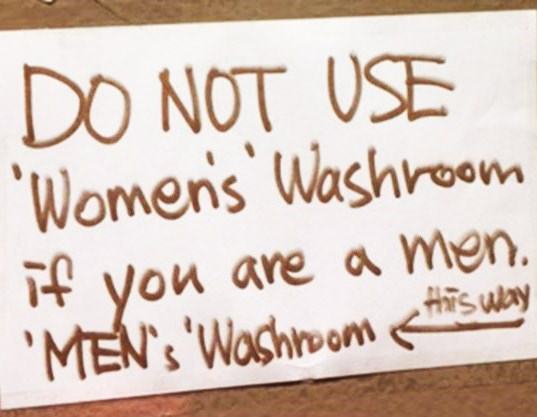

Joe talks tough: Would have ‘beat the hell’ out of Trump back in high school
Muslim-Led Persecution Is A Global Epidemic
SCOTUS to Decide if CA Can Force Christian Pregnancy Centers to Promote Abortion
Abortion extremism on full display
Pro-lifers rally at Supreme Court
CA Students Planning Abortion Walkout After School Shooting Walkout

Horrific transphobia at Toronto bakery! 😱
Women's college instructs professors not to call students 'women'
Gender-Inclusive Textbook Plunges France into a Linguistic Battle
Royal, Salem, Skyler, Oakley: Gender-neutral names on the rise
Senate passes controversial online sex trafficking bill in major blow to Silicon Valley
No Longer a Secret: How Israel Destroyed Syria's Nuclear Reactor
College of the Holy Cross Axes ‘Crusader’ Mascot to Avoid ‘Islamophobia’
‘I Can Only Imagine’ Might Not Be March’s Only Faith-Based Box Office Surprise Hit...
The Gospel in a World Haunted by Communism
Women: Don't idolize your bodies
Zuck punts when asked if users can trust Facebook
The Cambridge Analytica tipping point
Ex-regulators say company response won't stop federal investigations
Outrage because Republican benefited this time?
Wave of security-chief departures from major tech companies this week
Tech billionaire Thiel: Silicon Valley a ‘totalitarian place’ dominated by ideology
'Utterly horrifying': ex-Facebook insider says covert data harvesting was routine
WHATSAPP co-founder tells everyone to delete Facebook
How to Share as Little Data as Possible
YouTube Bans Firearms Demo Videos, Entering the Gun Control Debate
Top Vatican official resigns after doctoring Pope Benedict letter on Francis
Andy Savage Resigns from Megachurch over Past Abuse
Mockery of Mike Pence proves talking to God isn’t the problem -- agreeing with him is
Raging opioid epidemic still hasn't topped havoc caused by alcohol
Alcohol industry funded federal study on benefits of moderate drinking
First woman, LGBTETC lawmaker to lead CA Senate
IL Bill Would Require Public Schools Teach LGBTETC History to Children, K-12